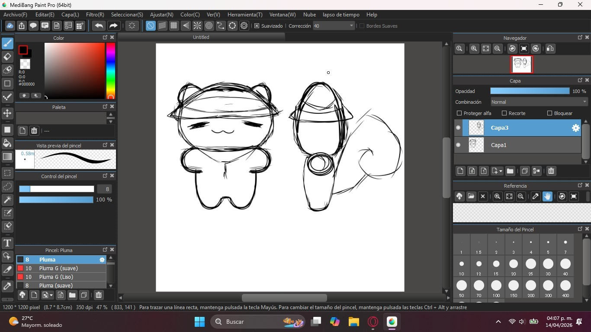

WHO IS SHIRO?

IMAGEN: @kiwikikawi - DAYORI SHIRO
Shiro es la mascota de nuestro periódico: una ardilla japonesa, creada por @kiwikikawi (Vicky)
Por ahora existe solo en formato digital, con la intención de convertirse en peluche y eventualmente salir a las calles para grabar y cubrir noticias locales.

IMAGEN: @kiwikikawi - DAYORI SHIRO
Este es el primer tomo, así que aún no tiene experiencia ni presencia fuera de la pantalla, todavía no reporta ni recorre el entorno, pero está en proceso.
Con el tiempo, se espera que encuentre su lugar dentro de cada edición y comience a cumplir con la idea central de nuestro proyecto: “Donde tu voz se hace noticia”.